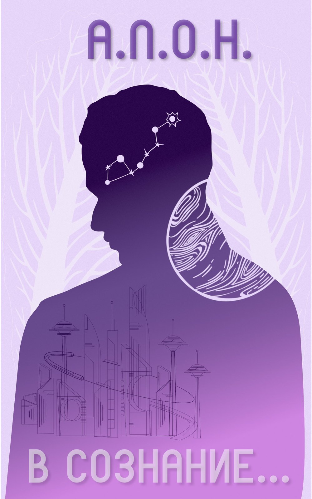

В сознание…
- А.Л.О.Н.
- 25 глав
- ≈ 9 часов чтения
- 2022
Виктор Малышев, консул Республиканского Консульства Колониальных Поселений, отправляется в очередную рутинную инспекцию на далекую колонию Галактической Республики. Но вместо привычной миссии его ждет нечто совершенно неожиданное. Проснувшись в одиночестве на неисправном космическом корабле, Виктор обнаруживает, что оказался в ловушке в космосе, не зная, сколько прошло времени и достиг ли он своей цели.
Теперь ему предстоит выживать в условиях, к которым он не был готов, и принимать решения, от которых зависит не только его жизнь, но и судьба всей колонии. Виктору придется сделать сложный выбор между личными интересами и благом общества, сталкиваясь с опасностями и загадками, которые могут изменить его жизнь навсегда.
Погрузитесь в захватывающую историю о выживании, мужестве и моральных дилеммах в далеком будущем, где каждое решение может стать судьбоносным.
Благодарности
В первую очередь, я хочу выразить огромную благодарность моей лучшей подруге, Екатерине Ивановой. Катя, без тебя эта книга никогда бы не состоялась. Спасибо за твою поддержку, за твою искреннюю веру в меня и мои способности, за комментарии, которые помогали раскрыть историю с новых сторон, и за ту невероятную мотивацию, которая не давала мне сдаться. Ты всегда находила нужные слова, чтобы вдохновить меня продолжать, даже когда силы и идеи, казалось, покидали меня.
Изначально эта история задумывалась как небольшой рассказ о человеке по имени Виктор, оказавшемся в одиночестве в космосе, без понимания того, что его ждет впереди. Это должен был быть просто короткий, камерный сюжет. Но именно ты увидела в этой задумке нечто большее и убедила меня расширить мир этой истории, углубить характеры и написать не просто рассказ, а целый роман. Ты всегда напоминала мне, что в этой истории есть то, что стоит рассказать миру.
Также я хочу поблагодарить всех первых читателей, которые поверили в меня и в эту историю. Ваши отклики, добрые слова и искренний интерес были для меня источником вдохновения. Вы видели в этом мире что-то свое, задавали вопросы, спорили о мотивации героев, делились своими мыслями и чувствами. Благодаря вам я понимал, что моя работа имеет значение и может находить отклик в сердцах других людей.
Спасибо каждому из вас, кто взял в руки эту книгу, открыл ее страницы и отправился в путешествие вместе с моими героями. Без вас этот мир, эти истории и эти персонажи, возможно, так и остались бы лишь в моем воображении.
Эта книга – результат нашей общей веры в то, что рассказанное слово способно соединять людей, делать нас ближе и открывать новые горизонты. Спасибо вам за то, что вы есть.
Авторское примечание
Хочется предупредить читателя, что «В СОЗНАНИЕ...» – это не просто научная фантастика.
Это психологическая трагедия, метафизический триллер и философская притча о границе человеческого. Одной из главных тем, является вопрос: что значит быть человеком? Сразу предупрежу искушенного читателя, что книга не предназначена для комфортного чтения. В этой истории нет места облегчению, нет места отводу взглядов, нет попытки описать происходящее безопасно. Здесь зафиксированы события, которые могут вызвать даже отторжение: насилие, утрата, нарушение границ, эмоциональное давление. Но всё, что описано, имеет внутреннюю логику и последствия. Ничего не вставлено ради эффекта. Ничего не преувеличено. Ничего не смягчено.
Но я не стремлюсь шокировать. Я не оправдываю и ни в коем случае не обвиняю. Я просто фиксирую то, что происходит, когда привычные структуры рушатся, а люди действуют в условиях, где мораль не даёт готовых ответов. Это не исповедь и тем более не манифест. Это последовательная фиксация событий, решений, реакций.
Если вы почувствуете, что этот материал может нанести вред – не продолжайте. Если вы будете ощущать, что он нарушает ваш внутренний покой – остановитесь. Никакой сюжет, никакая идея, никакая правда не стоят вашего равновесия.
Вы имеете право не читать. Вы имеете право сохранить себя. И это право важнее любой книги.
Оглавление
- 1Проснулся. Странное чувство нарастающей тревоги не отпускает Виктора.…26 мин
- 2Вход в атмосферу в спасательной капсуле оказывается не таким гладким, как…22 мин
- 3Выйдя из больничного бокса, Виктор оказывается на небольшой пыльной…12 мин
- 4Три серые тени проскальзывают вдоль внешней стены здания в противоположную…18 мин
- 5– Здесь все иначе, – говорит Диана, не сбавляя шага. – Не знаю, заметил ли…18 мин
- 6Почти весь путь до кабинета коменданта они идут по узкому тоннелю,…23 мин
- 7Долгий, настойчивый стук в дверь выводит Малышева из сна. Сначала он не…26 мин
- 8– Привет, консул, – голос, который сложно теперь перепутать с чьим-то еще,…8 мин
- 9В голове шумят сотни голосов, словно рой пчел поселился внутри нее,…7 мин
- 10Виктор открывает глаза. Он уверен, что ночь прошла, но кажется, что не…17 мин
- 11В туманной пелене, где воздух будто загустевает от чего-то неведомого,…28 мин
- 12«Осторожно, дым!» «Они выходят, скорее на улицу. Не упустите…21 мин
- 13– Надо покончить с этими ублюдками. Я уже говорил, у меня есть план, как…17 мин
- 14Виктор заходит в свою комнату, тихо прикрывая дверь. Оставляет небольшую…32 мин
- 15«Виктор, тебе здесь понравилось бы». Виктор замирает, вглядываясь в…10 мин
- 16В потолочных динамиках раздается резкий треск, затем ровный, напряженный…36 мин
- 17Вместо того, чтобы, уютно расположившись на заднем сиденье пикапа, смачно…38 мин
- 18За доли секунды в голове Карла вспыхивают десятки вопросов, которые позже…35 мин
- 19Диана сидит рядом с Виктором, слушает его рассказ и почти не замечает, как…15 мин
- 20– Фрай? Это ты? Карл не ожидал встретить кого-либо в столь поздний час,…27 мин
- 21Дорога до города тянется мучительно долго. Грузовик на старых…23 мин
- 22По радио наконец объявляют о возвращении экспедиции. Диана, ждавшая этой…31 мин
- 23Небольшой челнок, как зеркальная капсула, отражающая палящее солнце…33 мин
- 24– Эй, Фрай, как делишки? Голос, грубый и развязный, режет тишину пустующего…16 мин
- 25Длинный состав, плывущий в сгущающемся мраке тоннеля, с легким шипением…29 мин